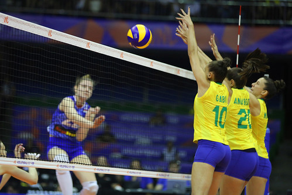

O vôlei é um esporte coletivo criado em 1895. Ele é jogado por duas equipes separadas por uma rede.
O objetivo do jogo é fazer a bola tocar o chão do adversário usando até três toques. É um esporte que exige trabalho em aquipe e agilidade.
O saque é o movimento que inicia a partida ou reinicia o jogo após cada ponto. O jogador deve bater na bola e enviá-la para o lado adversário por cima da rede.
Existem diferentes tipos de saque, como o saque por baixo, saque por cima e o saque viagem, que é mais forte e rápido.
A recepção é o movimento utilizado para receber o saque do adversário. Geralmente é feita com manchete, utilizando os antebraços para controlar a bola.
Uma boa recepção ajuda a equipe a organizar a jogada e preparar o ataque.
O levantamento é o movimento responsável por preparar a bola para o ataque. Normalmente é realizado pelo levantador da equipe.
O jogador utiliza as mãos acima da cabeça para direcionar a bola ao atacante com precisão.
O ataque é o movimento ofensivo do voleibol, realizado para tentar marcar pontos. O jogador salta e bate na bola com força em direção à quadra adversária.
O ataque exige força, velocidade e coordenação para superar o bloqueio adversário.
| Nome | País | Posição | Altura |
|---|---|---|---|
| Giba | Brasil | Ponteiro | 1,92m |
| Bruno Rezende | Brasil | Levantador | 1,90m |
| Wallace | Brasil | Oposto | 1,98m |
| Movimentos do Vôlei | |
|---|---|
| Levantador | Organiza as jogadas |
| Ponteiro | Ataca e defende |
| Oposto | Finaliza ataques |
| Central | Bloqueio |
| Ataque rápido | |
| Defesa na rede |
| Funções no Vôlei | ||
|---|---|---|
| Líbero | Recepção | Defesa |
| Especialista na defesa | ||

Acesse o site oficial do vôlei: FIVB